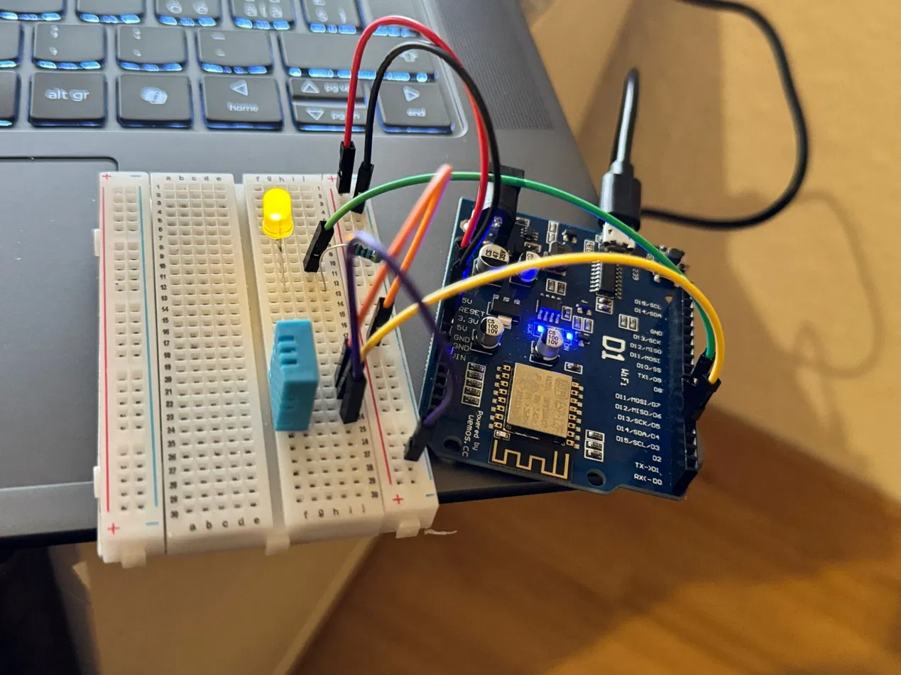
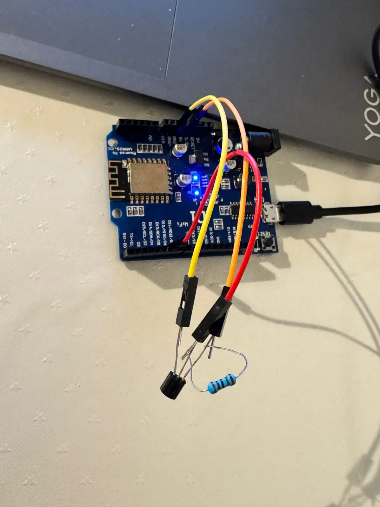
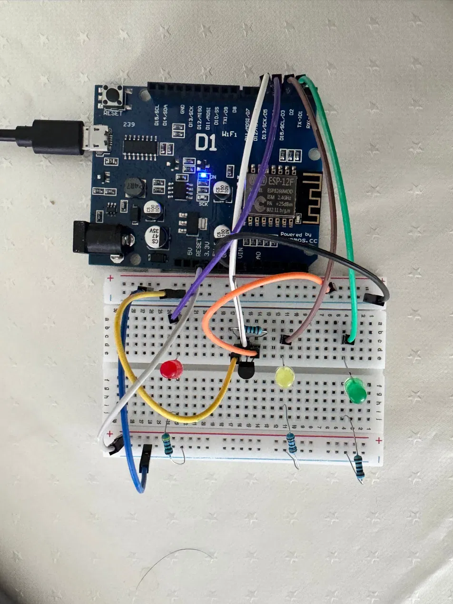

سیستملرنی باشقریش
- ویندوز سېرور و کمپیوترلر
- اکتیو دیرېکتاری: فایدلنوچیلر و حقوقلر
۲۰۲۷ ییل آگوستدن ایککی ییللیک عملی تعلیم اۉرنی قیدیریاپمن
سلام، مېن
برندهگی سېاېسبې مکتبیده پلتفارمه یرهتیش بۉییچه کسبی تعلیم آلیاپمن. اۉقیشده و اۉز اوی لابراتاریهمده ویندوز سېرور، اکتیو دیرېکتاری، ترماقلر و مجازیلشتیرش بۉییچه تجربه آرتتیریاپمن.
سولوتورن · برنده تعلیم
مېن سویسریهنینگ برن شهریدهگی سېاېسبې کمپیوتر مکتبیده پلتفارمه یرهتیش بۉییچه کسبی تعلیم آلیاپمن. بلخ اونیوېرسیتېتیده اقتصادیات بۉییچه لیسانس درجهسینی آلگنمن. افغانستانده ایشلرنی اویوشتیرش و مشتریلرگه خدمت کۉرسهتیش بیلن شوغوللنگنمن. ایککی مینگ یگیرمه اوچینچی ییلی سویسریهگه کۉچیب کېلگنمن.
سېرورلر، ترماقلر و تشکیلاتلر ایشینی تأمینلهیدیگن سیستملر مېنی قیزیقتیرهدی. بۉش وقتیمده اۉز اوی لابراتاریهمده میکروکنتروللېرلر و سېنسارلر بیلن تجربه اۉتکهمن. عملی ایش آرقهلی اۉرگنیشگه ایشانمن.
اۉقیشیمنینگ بیر قیسمی سیفتیده ۲۰۲۷ ییل آگوستدن ایککی ییللیک عملی تعلیم اۉرنی قیدیریاپمن. سیستملرنی باشقریش، ترماقلر و سېرورلر بۉییچه بیلیمیمنی چوقورلشتیرشنی، بولوت تېخنالاگیهلری، کمپیوتر خَوفسِزلیگی و سیستملرنی کوزتیشنی اۉرگنیشنی ایستهیمن.
سېاېسبې · برن
بلخ اونیوېرسیتېتی
وینتېرتوردهگی محلی تاکسی شرکتی اوچون وېبسایت. سایتنی رېجهلشتیرش، متن، توزیلیش، رسملر و وظیفهلرنی ماسلشتیرش بیلن شوغوللندیم. تېخنیکی ایشلر نېکست جېی اېس و وېرسېلده، چت جیپیتی و کلاود یاردمیده بجرېلدى.
سایتنی کۉریش ↗اۉز اوی لابراتاریهمده ویندوز سېرورنی مجازی محیطده اۉرنەتدیم و سازلهدیم. اکتیو دیرېکتاریده فایدلنوچیلر و حقوقلرنی باشقریشنی یۉلگه قۉیدیم. آدرېس بېریش و نام خدمتلرینی سینب کۉردیم. ترماق خطالرینی توزتیش و آددی پاورشېل دستورلرینی یازیش بیلن هم شوغوللنیاپمن.

عملی تجربهلر
اوی لابراتاریهمده قوریلمهلر و سېنسارلرنی دستورلشنی اۉرگنیاپمن. وېماس دی بیر تختهسی، سېنسارلر و اېکرانلر بیلن آردوینو دستورلش محیطیده سی پلس پلس تیلیده ایشلهیمن.


۲۰۲۶ ییل ۲۹–۳۰ اکتابر
سېاېسبې آرقهلی سویسریه معلومات تېخنالاگیهلری کسبی تعلیم تشکیلاتینینگ کیبېر خَوفسِزلیگی و سنعی اېنتېللېکت بیزنېس متخصصلری امتحانلریده ایککی کون یاردم بېردیم. تېخنیکی خطالرنی انیقلش و توزتیش، امتحان گروهي و اۉقیشداشلریم بیلن بیرگه ایشلش تجربهسینی آرتتیردیم.
۲۰۲۴ — حاضیرگچه
اۉرگنیش اوچون سېرور و ترماق لابراتاریهسینی قوریش، سازلش و خطالرنی توزتیش.
۲۰۱۹ — ۲۰۲۱
ایچکی ایشلرنی اویوشتیرش و رَقَملشتیرش، معلوموتلرنی باشقریش و مشتریلر ایشلرینی ماسلشتیرش.
۲۰۱۸ — ۲۰۱۹
مشتریلر معلوموتلرینی سهقلش و اداری همده تېخنیکی ایشلرگه یاردم بېریش.
نېمیسچه: بې بیر، تېلک گواهنامهسی، ۲۰۲۶ · اینگلیزچه: باشلنغیچ · دریچه: راوان · اۉزبېکچه: آنا تیلیم · تورکچه: باشلنغیچ
بلخ اونیوېرسیتېتی اقتصادیات لیسانسی · نېمیسچه بې بیر گواهنامهسی · سېاېسبې باهالر جَدولی · لیسانس دیپلومینینگ سویس اونیورسیټېتلری تشکیلاتی تامانیدن باهالنیشی
۰۴ /
۲۰۲۷ ییل آگوستدن ایککی ییللیک عملی تعلیم اۉرنی بارمی؟ سیزدن خبر آلیشنی ایستهیمن.